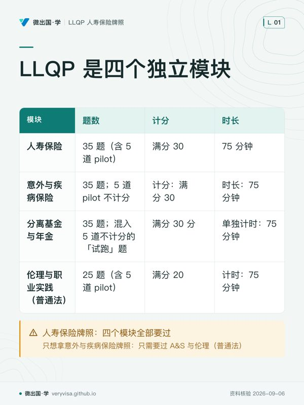
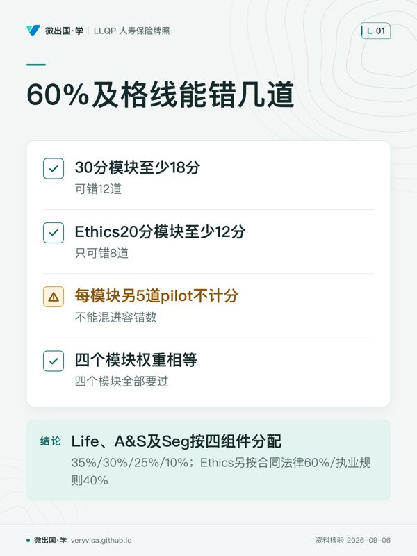
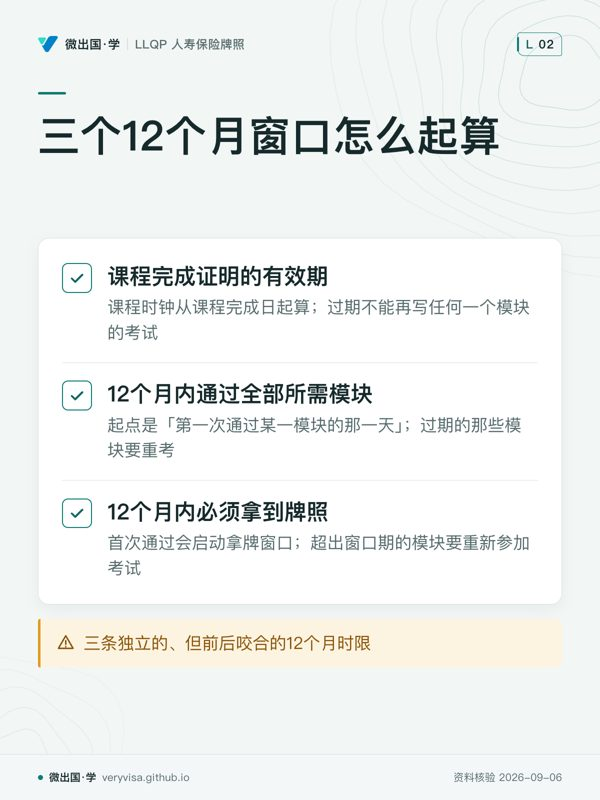
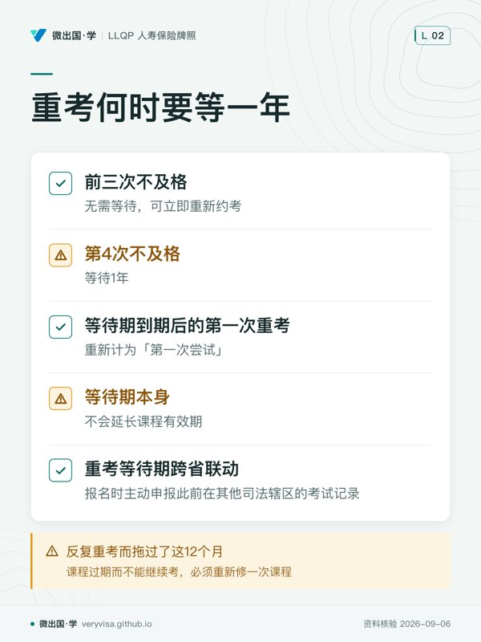
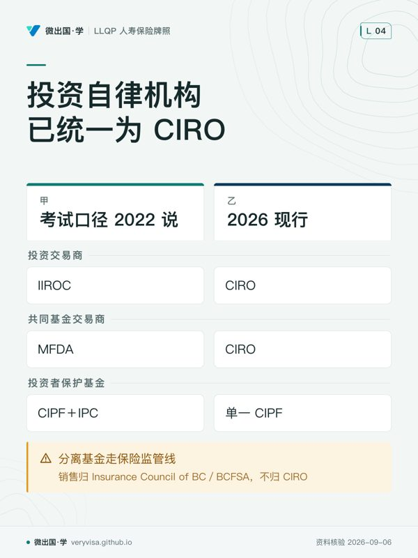
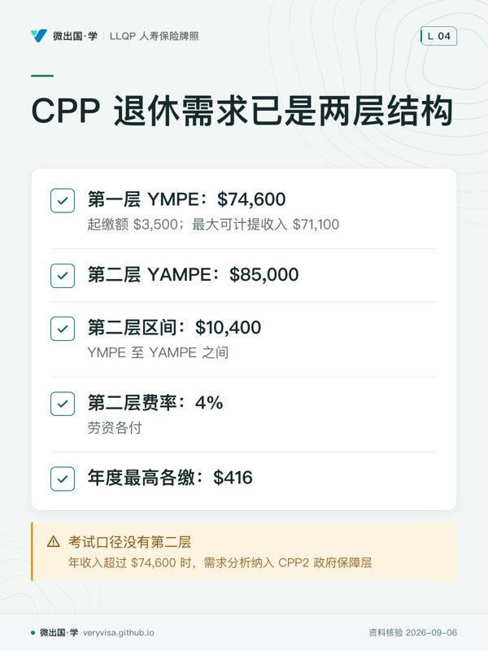
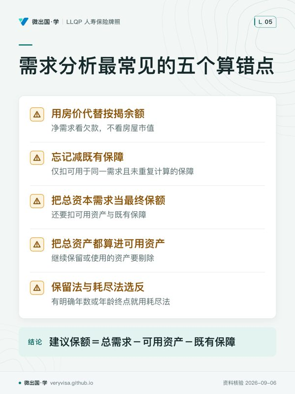
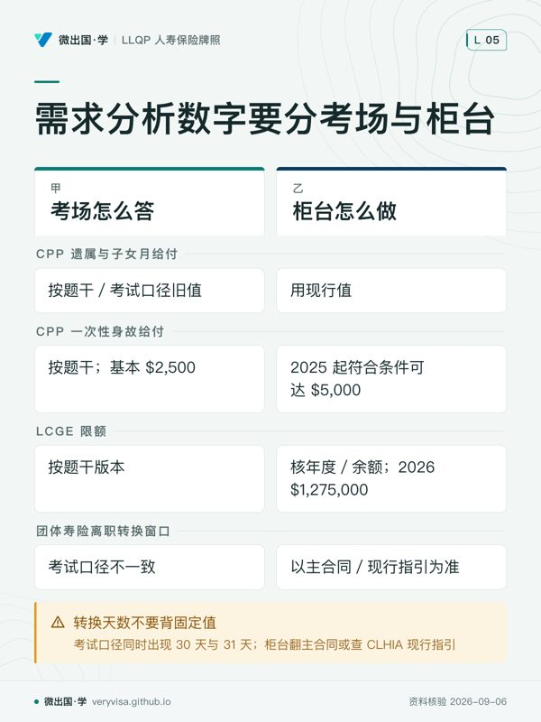

微出国 · 学
路线 › 知识卡
知识卡：不看正文也能拿到核心内容
全站 10 张知识卡，按页面分组。一张卡只画正文里的一段——一个判断、一条算法、一份清单；卡上每个字都能在对应页面的正文里找到（资料核验 2026-09-06）。
路线（首页）
- 先看先横向看同一行，避免把不同模块的考试信息串在一起。
- 易漏路径要求不同；别把资格范围和单场考试信息混为一谈。
- 下一步去练习逐模块核对弱项，再带牌照范围问题找持牌专业人士。

- 先看先分清两种满分对应的容错边界，别混成一套。
- 易漏试跑题答对答错都不影响成绩，但考生分辨不出它们。
- 下一步去练习按模块分别判断是否越过及格线。
考试制度：报名、时限与重考

- 先看先把课程完成的时钟和首次通过后的两个窗口拆开看。
- 易漏考完全部模块仍不等于拿牌；递交申请并获批也在期限里。
- 下一步去进度一起核对剩余模块、考位和申请材料。

- 先看先看什么时候出现等待，再看等待结束后计数如何重置。
- 易漏去别的省考试也不会绕开等待期，历史记录需要申报。
- 下一步去进度检查课程有效期能否覆盖后续重考。
寿险的法律框架：BC 用的是哪部法


投资与储蓄基础：考试口径没写的两个缺口

- 先看先辨题目指的是旧称还是当前名称。
- 易漏外观相似的产品，不一定走同一监管路径。
- 下一步答机构题时先锁年代，再配对应名称。

- 先看先把基础层和新增层拆开。
- 易漏高收入客户少算一层，会把保险缺口推高。
- 下一步算退休缺口前，先补齐政府来源。
评估客户处境：保额算错的八种方式

- 先看先分清题目给的是价值、欠款，还是可动用资源。
- 易漏最容易漏的是最后的两次扣减。
- 下一步看到终止点，先选算法，再开始代数。

- 先看先认题目要历史答法还是柜台现值。
- 易漏同一项目可能随年份、资格或合同条款变化。
- 下一步涉及具体数额或期限时，先锁定适用来源。